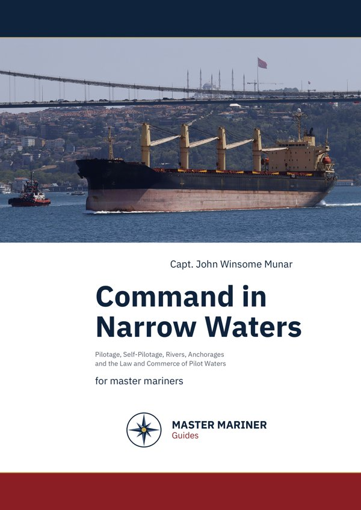

Command in Narrow Waters
Pilotage, Self-Pilotage, Rivers, Anchorages and the Law and Commerce of Pilot Waters
By Capt. John Winsome Munar · Master Mariner Guides, book 1 · November 2026

| Paperback | ISBN 979-8-14-253986-1 · 406 pages · 7 × 10 in · USD 34.99 |
|---|---|
| Kindle | Print replica with colour figures · USD 19.99 |
| Inside | 25 chapters, 74 figures, 56 tables, glossary, bibliography, index |
| Publisher | Independently published, first edition, November 2026 |
Paperback on AmazonKindle on Amazon
Search Amazon for the ISBN 9798142539861 or the title if a link does not open in your country's Amazon store.
About the book
Some narrow water the Master takes the ship through alone: the Singapore Strait, the Danish Straits when he judges a pilot is not needed, a port where he holds an exemption. In other places a pilot has the con but not the command. Either way the Master answers for the ship.
I wrote this book from the Master's side of the bridge. It explains when pilotage is compulsory, when it is only recommended, and how to take a ship in yourself when the rules allow it. It covers passage planning from berth to berth, under-keel clearance and squat, river currents, tugs, anchoring and berthing. With a pilot on board, it sets out what he is responsible for, what stays with the Master and when to take back the con. It also deals with the charter party clauses and the commercial pressure that push a ship into a channel before the conditions are right.
The cases come from published investigation reports and court decisions, among them Sea Empress, Tasman Spirit and CMA CGM Vasco de Gama. Each case ends with checks you can use on your next arrival.
For Masters, for chief officers preparing for command, and for officers who stand the watch in pilot waters and narrow channels.
What it covers
- Where pilotage is compulsory, where it is only recommended, and how to find out before arrival
- Self-pilotage: exemption certificates, local knowledge, the bridge team, and when to wait instead
- Berth-to-berth plans with wheel-over and abort points, parallel indexing and ECDIS settings
- Under-keel clearance, squat, bank effect and interaction, with worked examples
- Tides, river currents, tugs, anchoring and berthing
- With a pilot on board: what he is responsible for, what stays with the Master, and when to take back the con
- The Mississippi, the Amazon, the Changjiang, the Danish, Turkish and Singapore Straits, and the Panama, Suez and Kiel Canals
- Night, poor visibility, heavy weather and emergencies in confined water
- Evidence and investigations after an incident, and the Master's own exposure
About the author
Capt. John Winsome Munar is a Filipino master mariner with nearly twenty years at sea. He served on container ships, bulk carriers and tankers, and as Master he has commanded bulk carriers trading worldwide. In 2012 he placed first in the Philippine Master Mariner licensure examination. He also writes software: Android apps for seafarers, among them weather, GPS and man-overboard tools, and desktop utilities for everyday work. This is his first practical guide for ship Masters.
More from the author: trozovka.github.io · github.com/Trozovka
Master Mariner Guides
Command in Narrow Waters is the first book in the Master Mariner Guides, practical books for ship Masters written from the Master's chair.